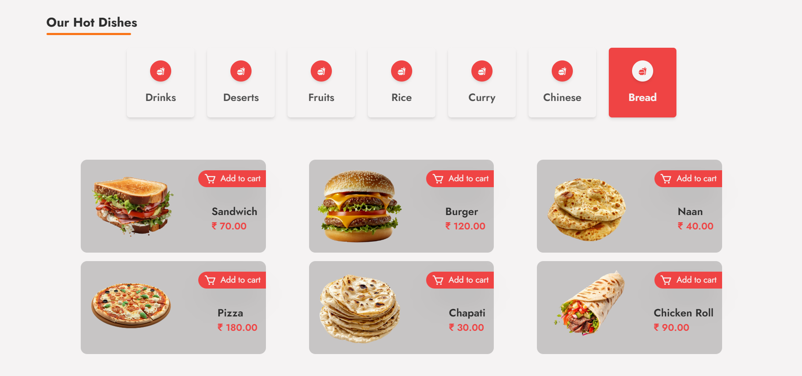
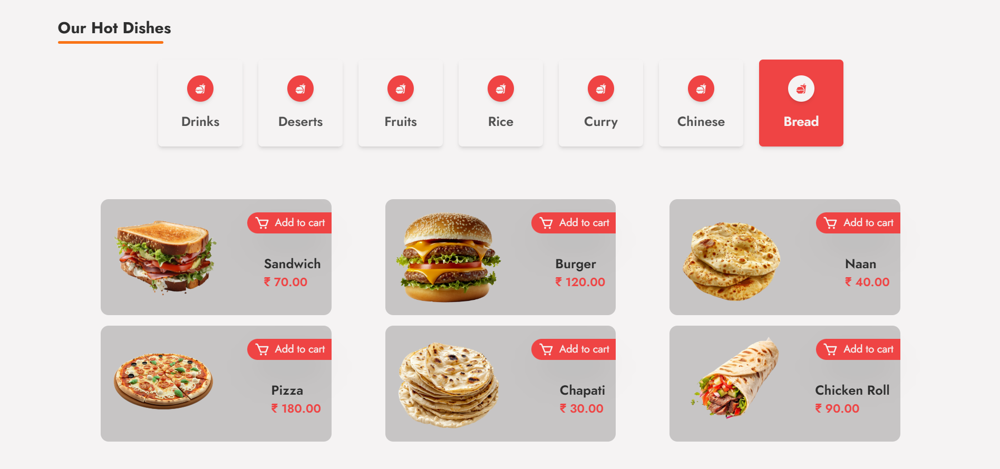
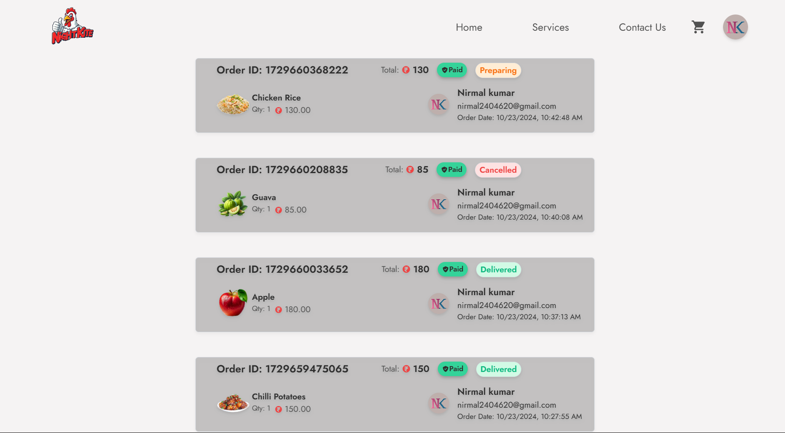

Full stack Food App
The Full Stack Food App is a dynamic and user-friendly application developed using React for the frontend, Tailwind CSS for sleek and responsive design, and Node.js for the backend. It leverages Firebase for cloud storage and user authentication, ensuring secure and reliable data management. Additionally, the app integrates EmailJS for email notifications and Razorpay for seamless payment processing, offering users a smooth and comprehensive experience. The app features a highly interactive Home Page, providing users with an intuitive interface to explore various food items. Users can browse the "Our Services" section to understand the offerings of the platform and can easily reach out through the "Contact Us" page. A dedicated cart functionality enables users to add and manage their food selections, making the purchasing process simple and efficient. On the administrative side, the app includes a robust Admin Dashboard, which is designed for managing the app’s data and user interactions. The dashboard includes real-time data visualizations, such as bar charts and pie charts, which automatically update to reflect the latest statistics. Admins can easily manage the “Items” section, where they can view and add new products to the platform. Additionally, the admin can monitor and manage users through the dashboard’s dedicated user management interface. By combining modern technologies such as Firebase for cloud services and authentication, Razorpay for payment gateways, and EmailJS for email services, the app ensures a seamless and efficient user experience while providing admins with powerful tools to maintain and enhance the platform's offerings. This project showcases the integration of modern web technologies and cloud services to build a scalable, efficient, and user-friendly food ordering system.
Download Project
Download the complete project and then when do few steps which I have mentioned below to make this project successfull.
Download ProjectInstall packages
To make this project successful, you need to install some libraries and packages.Open the terminal and install all the necessary libraries listed below.
Yarn
Yarn is a package manager for JavaScript that is designed to be faster, more reliable, the default package manager for Node.js. Yarn uses a deterministic dependency resolution algorithm that ensures that every developer on a team gets the exact same set of packages, which can help to prevent build errors and inconsistencies. Yarn also caches packages locally, which can significantly speed up installation times. Additionally, Yarn provides features like workspaces, which allow you to manage multiple packages within a single repository.
npm install --global yarn
React App
Yarn Create React App is a powerful tool that simplifies the process of setting up a new React project. It provides a pre-configured environment with all the necessary dependencies and tools, allowing developers to focus on building their application without having to worry about manual configuration. By using this package, you can quickly create a new React project with a consistent structure, boilerplate code, and essential features, saving you time and effort.
cd client && yarn create react-app
Install Firebase
The firebase-tools is a command-line tool that allows you to develop, deploy, and manage Firebase projects from your local machine. It provides a convenient way to interact with Firebase services like Firebase Realtime Database, Cloud Firestore, Cloud Functions, and Hosting. With this package, you can easily initialize Firebase projects, deploy your code to Firebase Hosting, manage your Firebase database, and perform various other tasks related to Firebase development.
npm install -g firebase-tools
Firebase Login
User successfully logs in using their preferred method, they can access their personalized data and interact with your application's features. The Firebase Login package handles the authentication process behind the scenes, saving you time and effort. It also provides robust security features to protect user data and prevent unauthorized access.
firebase login
Initialize Firebase
Firebase init is a command used in the Firebase CLI to set up a new Firebase project or modify an existing one. When you run firebase init, it guides you through a series of prompts to configure Firebase services such as Authentication, Firestore, Functions, Hosting, Storage, and more. This command helps you to initialize your project with the necessary Firebase configurations by creating essential files like firebase.json and .firebaserc. These configuration files store the settings and preferences for the Firebase project, enabling streamlined deployment and management of your app's backend services.
cd server && firebase init
Tailwind CSS
Tailwind CSS is a utility-first CSS framework that empowers developers to build custom user interfaces quickly and efficiently. It provides a vast library of pre-built CSS classes that can be combined to create unique and responsive designs without writing custom CSS. Tailwind CSS prioritizes developer productivity and flexibility, allowing you to focus on crafting the best possible user experience.
yarn add -D tailwindcss && yarn tailwindcss init
Router dom, icons & framer-motion
The react-router-dom package provides routing functionalities for React applications, allowing you to create single-page applications (SPAs) with multiple views. It enables navigation between different pages or components within your app, making it easier to manage complex user interfaces. The react-icons is a library that offers a collection of popular icons from various icon sets, such as FontAwesome, Material Design Icons, and more. It simplifies the process of adding icons to your React components, enhancing the visual appeal of your application. The framer-motion is a powerful animation library for React that allows you to create smooth and interactive animations within your components. It provides a declarative API for defining animations, making it easier to animate elements, transitions, and layouts in your React application.
yarn add react-router-dom react-icons framer-motion
Tailwind Scrollbar
tailwind-scrollbar is a CSS library that provides a simple and customizable way to style scrollbars in your web application. It offers a variety of options to customize the appearance of scrollbars, including their color, width, thickness, and more. By using this package, you can create a more visually appealing and consistent user experience across different browsers and devices.
npm install tailwind-scrollbar
Additional packages
- axios: A popular HTTP client library for making requests to RESTful APIs.
- tailwind-scrollbar: A customizable CSS library for styling scrollbars.
- @emotion/react, @emotion/styled: CSS-in-JS libraries for styling React components.
- @material-ui/core, @material-ui/icon, @mui/icons-materail, @mui/lab, @mui/material, @mui/styles: Components and utilities from the Material UI library for building beautiful and responsive user interfaces.
- @material-ui/core, @material-ui/icon, @mui/icons-materail, @mui/lab, @mui/material, @mui/styles: Components and utilities from the Material UI library for building beautiful and responsive user interfaces.
- @coreui/react-chartjs: A React component for creating charts using Chart.js.
- swiper: A popular JavaScript library for creating interactive sliders and carousels.
yarn add axios tailwind-scrollbar @emotion/react @emotion/styled @material-ui/core @material-ui/icon @mui/icons-materail @mui/lab @mui/material @mui/styles @coreui/react-chartjs swiper
SignUp Page
This page offers multi-functional gateway for user authentication, featuring an aesthetically appealing layout. The interface includes options for signing in or signing up using Google authentication, streamlining the login process for users who prefer a social login over email and password. A standout feature is the adaptive experience for mobile users. When viewed on smaller screens, the login and signup forms adjust their layout for a smooth, intuitive flow. The buttons and input fields are thoughtfully spaced and clearly labeled, making navigation simple even on compact displays. Users can choose between signing in and signing up with distinct buttons, which toggle between the respective forms without needing to reload the page. Each form offers quick access to social login or email-based authentication, ensuring a versatile user experience. To improve usability, incorporates alerts and validation features that provide instant feedback to users. When a user submits an incomplete form or enters invalid credentials, they receive targeted warnings, such as reminders for correct password strength or matching passwords during signup. A unique “Back” button in each form further enhances navigation, allowing users to return easily without restarting the entire process. For those who encounter errors, custom alerts are activated, reinforcing guidance and improving the overall experience. The Input fields use a subtle color scheme with a transparent, soft overlay and animated color transitions, reinforcing an engaging and inviting appearance.

Home Page
The home page of the food delivery app is designed with a strong focus on user experience, leveraging modern UI/UX principles to ensure ease of navigation and a visually appealing layout. The design utilizes a responsive grid system, ensuring that elements like the logo, tagline, and call-to-action buttons adapt seamlessly across different screen sizes, making the interface accessible on both desktop and mobile devices. The top-left corner prominently features the logo alongside a "Free Delivery" badge, strategically placed to enhance brand identity and instantly communicate value to the user. Below this, the primary heading, “The Fastest Delivery in Pudukkottai,” is emphasized using a bold font, setting the context for the service's regional focus. On the right side of the hero section, a high-resolution image is embedded, serving as both a visual teaser and an anchor to the app’s culinary offerings. The "Order Now" button is styled with vibrant colors to ensure it stands out, using hover animations to make it feel more interactive. The button links directly to the menu page, ensuring a smooth transition into the order process. The technical implementation of this section focuses on clean CSS for layout and color contrast, while JavaScript is utilized to add interactive animations to buttons and images, enhancing user engagement. Further down, the "Our Hot Dishes" section follows a well-structured card layout, dynamically loading data from a backend API. Each card contains an image of the dish, its price, and an “Add to Cart” button, which are all dynamically populated based on the data received from the server. The backend integration allows for real-time updates to the menu and pricing, ensuring users always see the most current information. The “Add to Cart” functionality is powered by JavaScript, capturing user selections and updating the shopping cart state in real time using Redux for state management, ensuring that multiple actions (like adding, removing, and editing items) are synchronized smoothly across the app. From a technical standpoint, the page is optimized for fast load times, with lazy loading implemented for images to improve performance on slower networks. Additionally, SVG icons are used for scalability and clarity across devices. CSS frameworks such as Tailwind or Bootstrap could be used to manage the responsive grid and card layout, while JavaScript (or frameworks like React) powers the dynamic interactivity, ensuring a modern and efficient front-end experience for users.
 

Orders Page
The UsersOrder component plays a crucial role in enhancing the user experience by allowing customers to view and manage their orders seamlessly. The component is built using React, leveraging hooks such as useEffect and useState to manage the component's lifecycle and state effectively. This structure enables the retrieval and display of orders associated with the currently logged-in user, ensuring that the information is dynamic and up-to-date. The component begins by selecting the current user and their orders from the Redux store using the useSelector hook. This approach centralizes state management, which is essential for maintaining an efficient and scalable application. The useEffect hook is employed to fetch all orders from the API if they are not already present in the Redux store. By calling the getAllOrder function, we asynchronously retrieve order data, which is then dispatched to the Redux store using the setOrders action. This pattern not only optimizes performance by minimizing unnecessary API calls but also keeps the component reactive to any changes in the order data. Once the orders are fetched, they are filtered based on the user_id of the logged-in user. This ensures that each user only sees their respective orders. The filtered list of orders is stored in the userOrders state, ready for rendering. The UI is designed to present these orders in a user-friendly manner. If the user has placed orders, the component maps through userOrders, creating an OrderData component for each order, which displays the order details succinctly. Conversely, if no orders exist, a promotional message encourages users to explore the product range, complete with a visually appealing image and a call-to-action button linking back to the product ordering page. This component effectively integrates API calls, Redux state management, and a responsive user interface to provide users with a comprehensive overview of their order history. The clean separation of concerns and the use of modern React features enhance both maintainability and user experience. The strategic implementation of hooks and Redux fosters a responsive application that updates in real-time as the user interacts with their orders.
Contact Us
The contact form using React that leverages the EmailJS service for sending emails. The component, ContactUs, utilizes the useState hook to manage the form data, which includes the user's name, email, and message description. By structuring the state in an object, I ensure that all the related inputs are grouped, making it easier to manage and update. The form captures user input and updates the corresponding state through a generic handleChange function that dynamically adjusts based on the input's name attribute. Upon form submission, I implement form validation to ensure all fields are filled before proceeding. If any fields are empty, the app dispatches an alert warning using Redux actions, providing feedback to the user. If the validation passes, the form data is sent to EmailJS using the send method, which requires the service ID, template ID, and the user's data. Upon successful submission, another alert confirms that the email was sent, and the form fields are reset for the user's convenience. The layout is designed using Tailwind CSS, providing a responsive design that adjusts from a single-column layout on mobile devices to a two-column layout on larger screens. The left side features the form, while the right side displays contact details with a gradient background for visual appeal. The icons for phone and email add an interactive touch, and social media links are incorporated with hover effects to enhance user engagement. Finally, the component includes a footer, ensuring that the layout remains cohesive and well-structured, contributing to a user-friendly experience.

Dashboard
In the DBHome component, I have created a functional React component that acts as a dashboard for managing and visualizing data related to products, users, and orders in an e-commerce application. The component employs hooks from React and Redux for state management, ensuring a seamless experience when fetching and displaying data. Upon rendering, the component utilizes the useEffect hook to check if the required data, such as products and user details, are already present in the store. If the data is missing, it invokes API calls to retrieve this information using asynchronous functions. The structure of the component includes a grid layout that efficiently organizes key metrics into visually appealing cards. These cards display critical statistics such as the total number of orders, products, and users. Each card leverages React Icons for intuitive visual representation, enhancing the user interface's clarity. The data for these metrics is derived from the Redux store, ensuring that the component reflects the current state of the application dynamically. Additionally, the component features two types of charts: a bar chart and a doughnut chart, which provide graphical representations of product categories and order statuses, respectively. The bar chart categorizes products into distinct groups, such as drinks and desserts, allowing users to quickly assess inventory distribution. The doughnut chart presents a comprehensive overview of order statistics, such as total orders, delivered, cancelled, paid, and unpaid orders. This visual representation is crucial for analyzing the performance of the e-commerce platform and identifying areas that may require attention. To ensure an optimal user experience, the component includes thorough styling with Tailwind CSS, facilitating a responsive design that adapts to different screen sizes. The use of colors and shadows adds depth to the visual hierarchy, making the dashboard not only functional but also aesthetically pleasing. The integration of charting libraries, like CChart from CoreUI, enables developers to leverage powerful data visualization techniques effortlessly. Overall, this component is a robust representation of the application's backend data, allowing for effective management and decision-making.

Dashboard Orders
In developing the admin dashboard for managing orders, I implemented a component structure that efficiently retrieves and displays order data using React and Redux. The DBOrders component serves as the main container where all orders are fetched and rendered. It leverages the useEffect hook to call the getAllOrder API function when the component mounts. This ensures that if the order data is not already present in the Redux store, it fetches the latest order information and updates the store with the action setOrders. This architecture promotes a clear separation of concerns, where data fetching and state management are handled distinctly, enhancing maintainability and scalability. The orders are displayed in a reverse chronological order, allowing administrators to see the most recent orders first. The OrderData component is responsible for rendering individual order details. This component takes in various props, including the order data and its index, and utilizes them to format and display information such as order ID, total price, order status, and the customer's details. By employing the motion component from Framer Motion, I added engaging animations for better user experience. For example, the visual effects on the order items enhance the dashboard's responsiveness and provide a polished look. An essential feature of the admin dashboard is the ability to update the status of each order directly. The handleClick function is invoked when an admin interacts with the buttons to update an order's status to "preparing," "cancelled," or "delivered." Upon clicking, it calls the updateOrderSts API function to reflect the new status on the backend and then refreshes the order list by fetching all orders again. This approach ensures that the dashboard always presents the most up-to-date information, making it easier for admins to manage order fulfillment efficiently. The design also considers responsive behavior, with conditional rendering based on the screen width. For larger screens, I included a more detailed layout that showcases additional information, such as product images and quantities, making it easier for administrators to quickly assess order contents. On smaller screens, the layout adapts to maintain usability while still delivering the necessary information. This adaptability enhances the overall functionality of the admin dashboard, ensuring that it remains intuitive and effective across various devices.

Dashboard Items
The DBItem is designed to manage and display a list of products in a dynamic and user-friendly manner. Built with React, this component leverages several modern features and libraries, such as Redux for state management and custom APIs for data fetching and manipulation. The component utilizes the useEffect hook to handle the lifecycle of data fetching. When the component mounts, it checks if the products state is empty. If so, it invokes the getAllProducts API function to retrieve the product data from the server. This function returns a promise that, upon resolution, dispatches the setAllProducts action, which updates the Redux store with the newly fetched products. This design pattern minimizes unnecessary API calls and ensures that data is only fetched when necessary, optimizing performance. A key feature of this component is the integration with the DataTable component, which is responsible for rendering the product data in a structured and interactive table format. The DBItems component defines the table's columns, including the product image, name, category, and price. The imageURL column is rendered as an image element with responsive styling to ensure that the images are displayed correctly. For the price column, the HiCurrencyRupee icon from React Icons is used, enhancing the UI's aesthetics by providing a visual cue for currency representation. The actions array within the DataTable configuration allows for CRUD operations, specifically deletion in this case. A delete action is included that prompts the user for confirmation before proceeding. Upon confirmation, the deleteAProduct function is called with the product's ID. If the deletion is successful, a success alert is dispatched using the alertSuccess action. This alerts the user that the product was deleted successfully and clears the message after a short delay using setInterval to enhance user experience. After deletion, the component fetches the updated list of products, ensuring the displayed data remains current. It encapsulates the complexities of data management while providing users with an intuitive interface for interacting with their product list. Overall, DBItems serves as a cornerstone for product management in this project, showcasing the effectiveness of modern web development practices.

Dashboard Add New Items
The DBNewItem component is enabling admin to add new products efficiently. It leverages React's state management alongside Firebase for image storage and product data management, ensuring a seamless user experience. The component utilizes several hooks, particularly useState, to handle the various state variables necessary for creating a new product, such as item name, price, category, loading status, upload progress, and the image download URL. When an admin selects an image file to upload, the uploadImage function is triggered. This function sets the loading state to true and prepares to upload the image to Firebase Storage. The image is stored in a specific path, prefixed by a timestamp to ensure unique file names. The uploadBytesResumable function is utilized to upload the image, providing real-time progress updates. The on method of the upload task listens for state changes, updating the progress percentage in the state and handling any potential errors by dispatching alert actions. Once the upload is complete, the function retrieves the download URL of the uploaded image using getDownloadURL, updating the state and informing the user of the successful upload. The component also handles image deletion. When an admin decides to remove the uploaded image, the deleteImageFromFirebase function is invoked. This function deletes the image from Firebase Storage and resets the imageDownloadURL state. A success alert is dispatched to notify the admin of the action, and the product list is refreshed by fetching all products again. This ensures that the latest state is reflected in the UI. The product submission process is initiated when the admin clicks the save button, triggering the submitNewData function. This function constructs a product data object, including the product name, category, price, and the image URL. It then calls the addNewProduct API function to send the data to the server. Upon a successful addition, an alert is dispatched to inform the user, and the input fields are cleared for the next entry. The layout of the component is designed to be user-friendly, featuring a flexible grid system that adapts to various screen sizes. Input fields are styled with clear prompts, and the upload area uses a combination of a spinner for loading and a cloud upload icon for visual appeal. The dynamic nature of the component, enhanced by the integration of the framer-motion library, adds a layer of interactivity, making the user experience more engaging. Overall, DBNewItem exemplifies modern web application practices, combining efficient data handling, responsive design, and user-friendly interactions.

Dashboard Users
The primary focus is on building a user management interface that integrates with a backend API to fetch user data and present it in a visually structured format. The project utilizes React alongside Redux for state management, allowing for efficient data flow and UI updates. The component leverages the useEffect hook to initiate data retrieval upon the component's mount. It checks if the allUsers state is either empty or undefined. If so, it invokes the getAllUsers function from the API, which retrieves the user data. The results are then dispatched to the Redux store using the setAllUserDetails action. This approach ensures that user data is only fetched when necessary, optimizing performance by preventing unnecessary API calls. A key feature of the interface is the DataTable component, which is designed to display user information in a structured manner. The table includes several columns: an image of the user, their display name, email address, and a verification status indicator. Each column is configured with a title and a corresponding field, utilizing the render function for custom rendering of complex data types. For instance, the user image displays either the URL provided or a default avatar if the URL is missing. The verification status is presented as a colored badge that visually distinguishes between verified and non-verified users. To enhance the user experience, the table also includes some conditional rendering. For instance, when displaying the verification status, a color-coded badge indicates whether the user's email is verified or not. This adds an immediate visual cue for users managing the data. In terms of data handling, the application ensures that it maintains the integrity and accessibility of user information. The use of Redux allows for centralized state management, making it easier to share the user data across different components if needed. Additionally, the layout employs flexbox for responsive design, ensuring that the table is visually appealing and functional across various screen sizes.